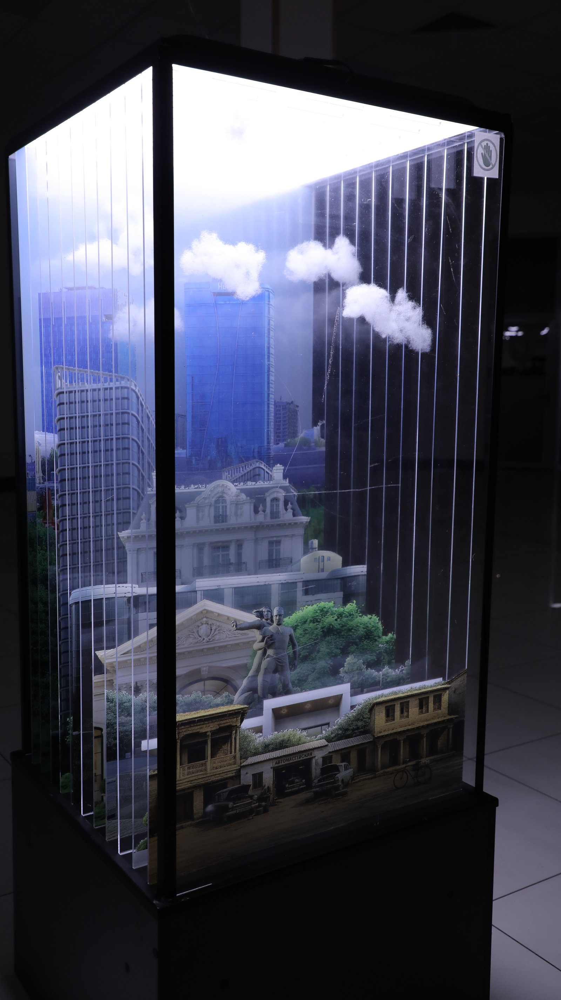

Art Engineering · Season 2
Behind the
Veil

Clarity is a word we have almost forgotten how to use truthfully. Everything modern comes to us through a membrane — a screen, a filter, a sheet of plastic the rain wraps around our shoulders. We think we are seeing the city; we are seeing our distance from it.
This piece is not about a city behind a curtain. It is about the curtain itself, and the fact that we no longer notice it. To remember the air unfiltered, the street without a windshield between it and our eyes, would require first admitting that we have gone almost a generation without that particular kind of seeing. The veil is not the problem. Forgetting that it is there — that is.
· · ·
- Materials
- PVC strip curtain (industrial), acrylic vitrine, archival print on silk
- Subject
- A composite skyline from three Central Asian cities
- Process
- Print suspended inside vitrine; strips hung on the outer pane at 8 mm pitch
- Depth
- Two viewing angles: frontal (veiled) and oblique (clear)
- Edition
- One of one
Also in this exhibition
Stay in touch —
Shota Rustaveli St., 156, 100121 Tashkent · 20–24 April 2026